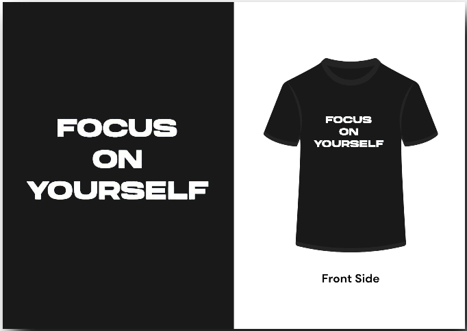
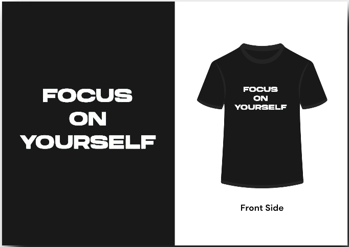

Founders
Our Story
Founded in December 2024, Robe Fashion is a bold new name in the textile industry, driven by a passion for quality, comfort, and contemporary streetwear. We specialize in designing and manufacturing premium T-shirts and urban-style apparel that resonate with the spirit of modern, expressive fashion.
At Robe Fashion, we believe that clothing is more than just fabric — it’s a reflection of individuality and culture. Our collections are inspired by urban life, creativity, and everyday confidence, tailored for those who want to stand out while staying effortlessly comfortable.
From sourcing high-quality materials to ensuring ethical production standards, we are committed to delivering garments that look good, feel great, and last. Whether it's casual everyday wear or statement pieces, Robe Fashion is your go-to for authentic urban fashion with a refined edge.
Audience Breakdown
AGE 15–22
AGE 22–32
 

AGE 32 & ABOVE
Vision
To redefine everyday fashion by blending comfort, creativity, and urban culture — empowering a new generation to wear confidence, express individuality, and move through the world with assertive style.
Mission
At Robe Fashion, our mission is to craft high-quality, urban-inspired clothing that celebrates individuality, fuels self-expression, and brings streetwear to life through bold design, ethical production, and unmatched comfort. We aim to build a community where fashion is fearless, accessible, and always authentic.